Hacés un gran trabajo.
Hagamos que tu próximo cliente lo vea.
Diseño y contenido para emprendedores que quieren ordenar su presencia digital
Tu negocio, mejor presentado en cada canal
Si te falta tiempo o no sabés por dónde empezar, podemos ayudarte a ordenar, diseñar y crear.
Muestras conceptuales de servicios. Las escenas e interfaces son ilustrativas; no son casos de clientes ni resultados medidos.
WhatsApp Business
Menos consultas repetidas. Más claridad para elegir.
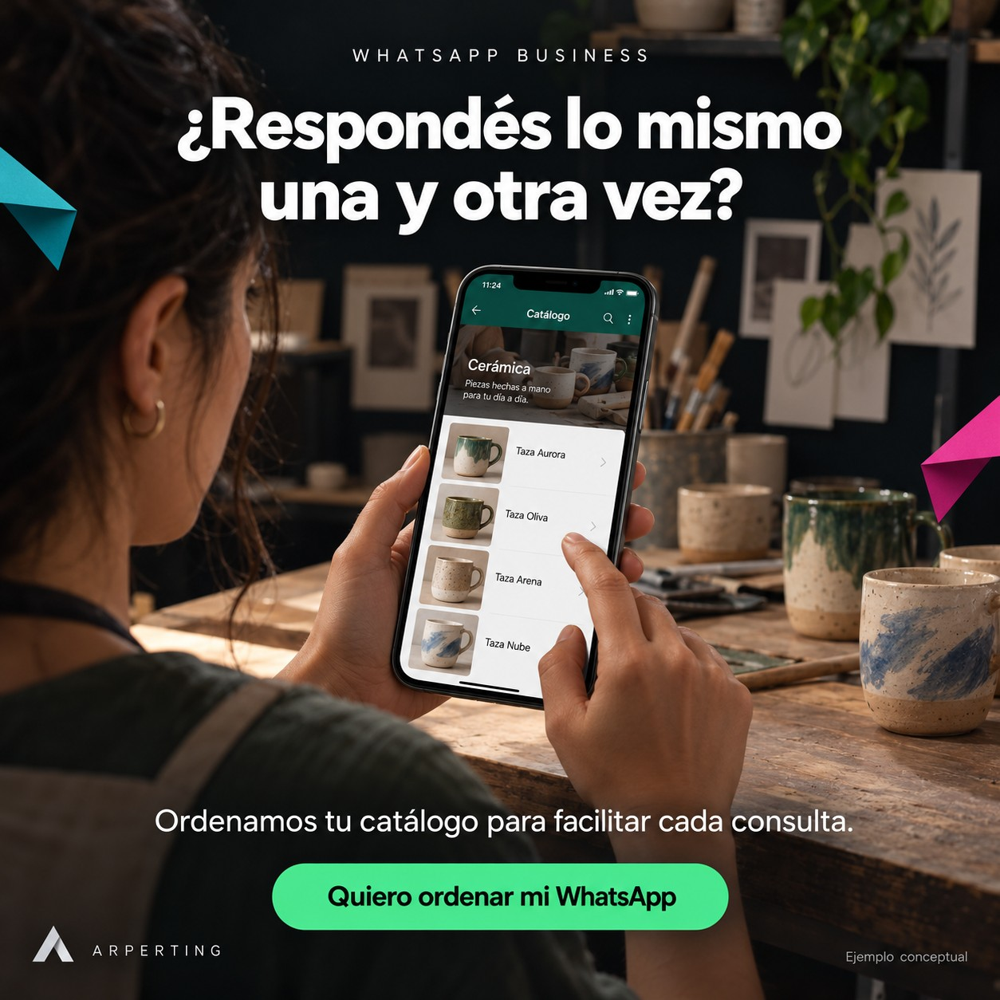
¿Te pasa alguna de estas cosas?
❌ Tu foto de perfil no representa tu negocio.
✅ Diseñamos o adaptamos una imagen reconocible, incluso en tamaño pequeño.
❌ Mandás fotos sueltas cada vez que te preguntan qué vendés.
✅ Creamos imágenes y descripciones para un catálogo organizado que facilite elegir.
❌ Escribís las mismas respuestas una y otra vez.
✅ Preparamos respuestas rápidas para tus preguntas frecuentes, listas para enviar mediante atajos.
Ver todo lo que podemos preparar
❌ No se entiende qué ofrecés al entrar a tu perfil.
✅ Redactamos una descripción clara y completamos la información del negocio.
❌ Tu presentación visual está incompleta.
✅ Diseñamos una portada coherente con tu marca, cuando la función esté disponible en tu cuenta.
❌ Te escriben sin saber cuándo atendés.
✅ Configuramos horarios y un mensaje de ausencia que indique cuándo podrán recibir respuesta.
❌ No tenés un saludo preparado para nuevas consultas.
✅ Configuramos un mensaje automático de bienvenida con información útil y un próximo paso.
❌ Se mezclan consultas, pedidos y seguimientos.
✅ Te ayudamos a organizar conversaciones con etiquetas según tu forma de trabajar.
❌ No sabés cómo mantenerlo actualizado.
✅ Te guiamos para actualizar el catálogo, los datos y las respuestas de tu negocio.
Diseño y contenido: Foto, portada disponible, imágenes de catálogo y textos.
Configuración: Perfil, catálogo, horarios, bienvenida, ausencia y etiquetas.
Guía de uso: Uso de respuestas rápidas y actualización del negocio.
Las respuestas rápidas se envían mediante atajos. La bienvenida y la ausencia pueden ser automáticas; no sustituyen un asistente que responda todas las consultas.
Elegimos juntos lo que necesitás. El diseño, la configuración y el acompañamiento incluidos se detallan en tu propuesta.
No necesitás resolverlo todo de golpe. Empecemos por lo que hoy te quita tiempo.
Google Maps
Que sepan dónde estás y cómo llegar.
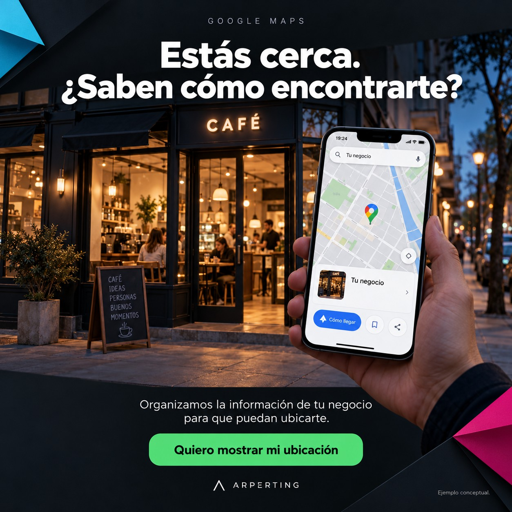
¿Te pasa alguna de estas cosas?
❌ Tus clientes no encuentran bien tu local.
✅ Revisamos dirección y ubicación para facilitar que sepan cómo llegar.
❌ Los horarios están incompletos o desactualizados.
✅ Ordenamos los horarios habituales y especiales para evitar confusiones.
❌ Las fotos no muestran lo que van a encontrar.
✅ Seleccionamos y preparamos fotos claras del frente, el espacio y lo que ofrecés.
Ver todo lo que podemos preparar
❌ La información no explica bien tu actividad.
✅ Revisamos categoría, descripción y datos de contacto del negocio.
❌ No sabés cómo responder las reseñas.
✅ Preparamos criterios y ejemplos de respuesta cercanos y profesionales, sin inventar opiniones.
❌ No sabés cómo gestionar tu perfil.
✅ Te orientamos sobre acceso, verificación y actualización. La aprobación depende de Google.
Diseño y contenido: Selección de fotos, descripción y textos de respuesta.
Configuración: Revisión de datos y horarios; acompañamiento en el proceso de verificación.
Guía de uso: Actualizaciones y atención de reseñas reales.
Elegimos juntos lo que necesitás. El diseño, la configuración y el acompañamiento incluidos se detallan en tu propuesta.
No necesitás resolverlo todo de golpe. Empecemos por lo que hoy te quita tiempo.
Facebook
Una página que presente bien tu negocio.
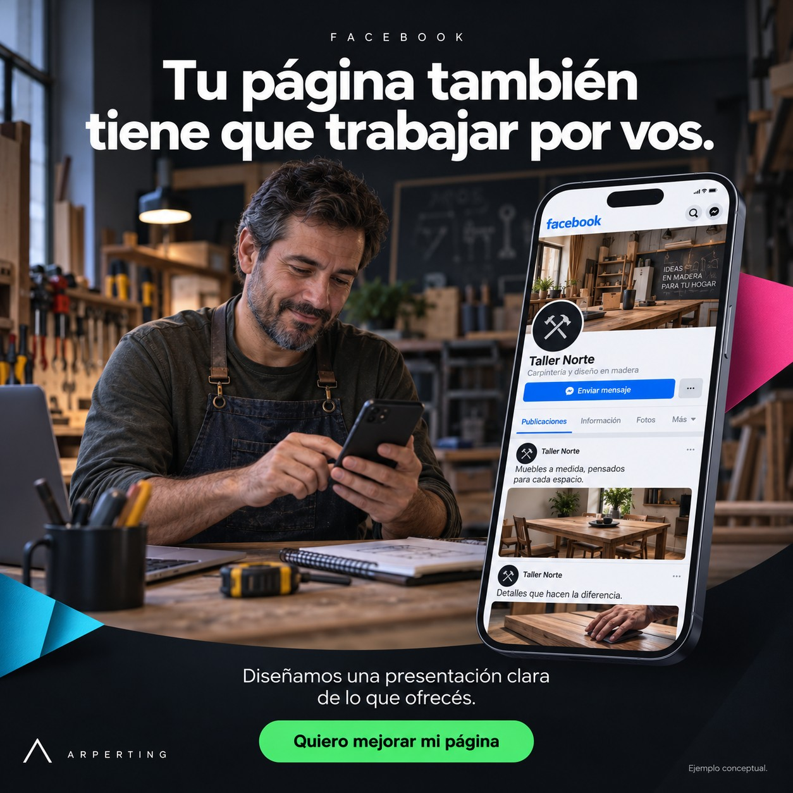
¿Te pasa alguna de estas cosas?
❌ La foto y la portada no representan tu negocio.
✅ Diseñamos una presentación visual coherente para que identifiquen tu marca.
❌ No se entiende qué servicios ofrecés.
✅ Ordenamos la información y creamos piezas que expliquen tu propuesta.
❌ Publicás a las apuradas, cuando te queda tiempo.
✅ Preparamos temas, textos y diseños para un calendario acordado.
Ver todo lo que podemos preparar
❌ Las publicaciones no indican cómo consultar.
✅ Redactamos llamados a la acción claros y revisamos el recorrido hasta el contacto.
❌ Cada publicación tiene un estilo diferente.
✅ Definimos colores, tipografías y plantillas para dar continuidad a tu comunicación.
❌ Te cuesta organizar la publicación del contenido.
✅ Te guiamos con las herramientas disponibles; la programación y gestión se acuerdan por separado.
Diseño y contenido: Foto, portada, publicaciones y mensajes comerciales.
Configuración: Información de la página y recorrido hacia el contacto.
Guía de uso: Planificación y uso de herramientas de publicación.
Elegimos juntos lo que necesitás. El diseño, la configuración y el acompañamiento incluidos se detallan en tu propuesta.
No necesitás resolverlo todo de golpe. Empecemos por lo que hoy te quita tiempo.
Instagram
Un perfil que conecte lo que hacés con lo que se ve.
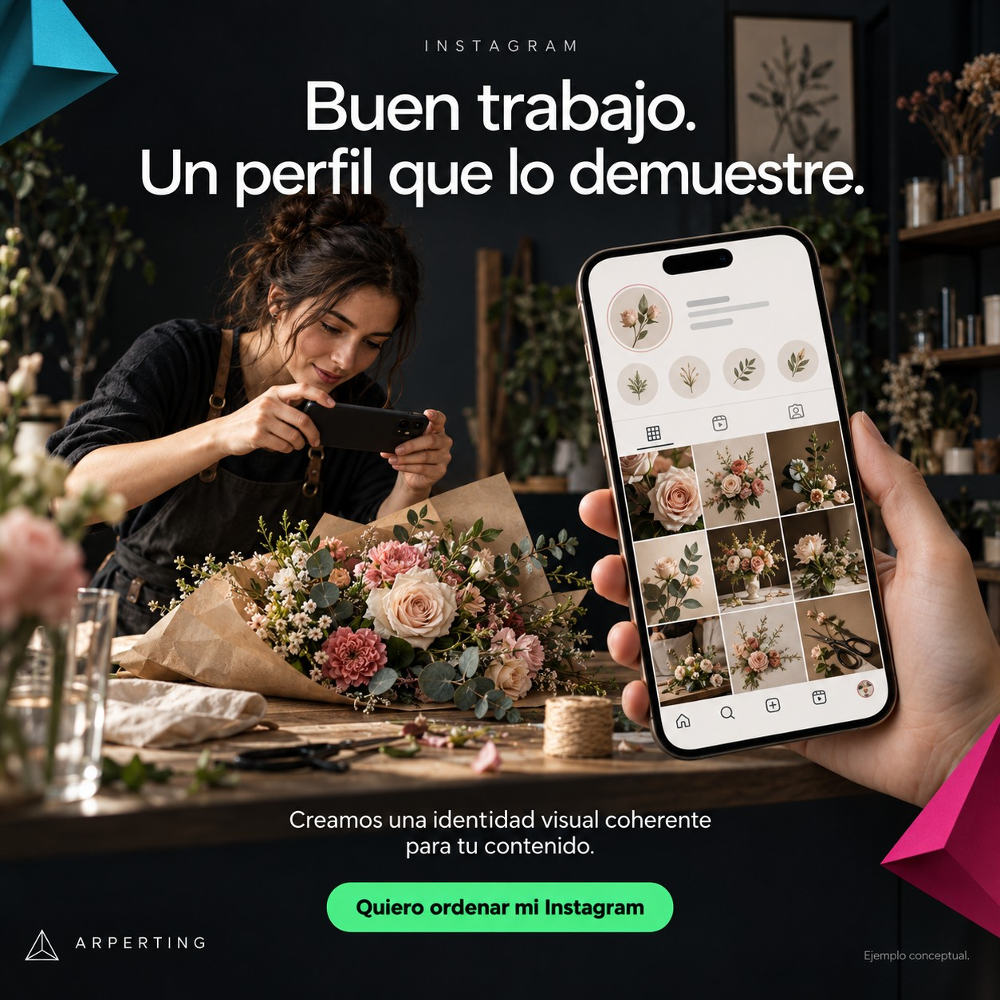
¿Te pasa alguna de estas cosas?
❌ Tu biografía no explica qué hacés ni para quién.
✅ Redactamos una presentación breve y clara con un próximo paso para consultar.
❌ Tu perfil mezcla estilos y no se reconoce tu marca.
✅ Definimos una dirección visual para fotos, diseños y portadas.
❌ No sabés qué publicar.
✅ Proponemos temas y formatos vinculados con tu servicio y las preguntas de tus clientes.
Ver todo lo que podemos preparar
❌ La información importante se pierde entre publicaciones.
✅ Organizamos historias destacadas y diseñamos portadas fáciles de reconocer.
❌ Tenés material, pero no sabés cómo convertirlo en contenido.
✅ Creamos carruseles y guiones para reels a partir del material y alcance acordados.
❌ Tus publicaciones no invitan a dar el siguiente paso.
✅ Sumamos llamados a la acción y revisamos que el contacto sea claro y accesible.
Diseño y contenido: Biografía, portadas, carruseles y guiones para reels.
Configuración: Organización de la presentación del perfil y sus accesos.
Guía de uso: Continuidad visual y planificación del contenido.
Elegimos juntos lo que necesitás. El diseño, la configuración y el acompañamiento incluidos se detallan en tu propuesta.
No necesitás resolverlo todo de golpe. Empecemos por lo que hoy te quita tiempo.
TikTok
Tu trabajo tiene historias para mostrar.
¿Te pasa alguna de estas cosas?
❌ Querés mostrar tu trabajo, pero no sabés cómo empezar.
✅ Transformamos tus ideas en guiones breves con un gancho inicial claro.
❌ No tenés tiempo para editar cada video.
✅ Editamos el material acordado con cortes, subtítulos y un cierre que invite a consultar.
❌ Grabás sin saber qué tomas necesitás.
✅ Te damos una guía sencilla de planos, luz y encuadre para mostrar tu trabajo.
Ver todo lo que podemos preparar
❌ Cada video se siente desconectado del anterior.
✅ Definimos temas y una línea de contenido para darle continuidad a tu presencia.
❌ Se ve lo que hacés, pero no queda claro qué ofrecés.
✅ Conectamos la demostración con un mensaje que explique tu servicio.
❌ No sabés qué ajustar en los siguientes videos.
✅ Te orientamos para revisar las métricas disponibles y probar mejoras sin prometer viralidad.
Diseño y contenido: Ideas, guiones, edición y subtítulos.
Configuración: Presentación del perfil y organización del material acordado.
Guía de uso: Grabación y lectura básica del rendimiento del contenido.
Elegimos juntos lo que necesitás. El diseño, la configuración y el acompañamiento incluidos se detallan en tu propuesta.
No necesitás resolverlo todo de golpe. Empecemos por lo que hoy te quita tiempo.
↑ Volver al inicio
PACKS Y PRECIOS
Empezá por lo que tu negocio necesita hoy
¿Te falta tiempo, no sabés cómo configurar tus redes o sentís que tu imagen no refleja tu trabajo? En ARPERTING te escuchamos y te ayudamos a dar el próximo paso con diseño, contenido y acompañamiento.
Elegí la necesidad que querés resolver. Cada pack incluye asesoramiento personalizado y un alcance concreto.
PACK 01 · Primer Impulso
WhatsApp Business
Menos mensajes repetidos. Más claridad para elegir.
Aplicación ilustrativa
¿Mandás fotos sueltas y respondés siempre lo mismo? Ordenamos tu presentación y tu catálogo para que cada consulta empiece con información clara.
Qué incluye este pack
- ✓ Asesoramiento personalizado sobre tu negocio y sus consultas habituales.
- ✓ Foto de perfil y descripción comercial acordes a tu identidad.
- ✓ Catálogo inicial de hasta 10 productos o servicios, con imágenes y descripciones.
- ✓ Horarios y datos de contacto completos.
- ✓ Mensajes de bienvenida y ausencia.
- ✓ Respuestas rápidas mediante atajos y etiquetas para organizar conversaciones.
- ✓ Portada cuando la función esté disponible en tu cuenta.
- ✓ Guía para usar y actualizar tu WhatsApp Business.
Visita presencial a coordinar según zona. Las respuestas rápidas se envían mediante atajos; no son un chatbot.
Precio anticipado
$150.000 ARS
Contratando hasta el 31 de octubre de 2026.
Valor del pack: $165.000 ARS.
PACK 02 · Presencia que conecta
Facebook
Que tu Facebook muestre lo que tu negocio vale.
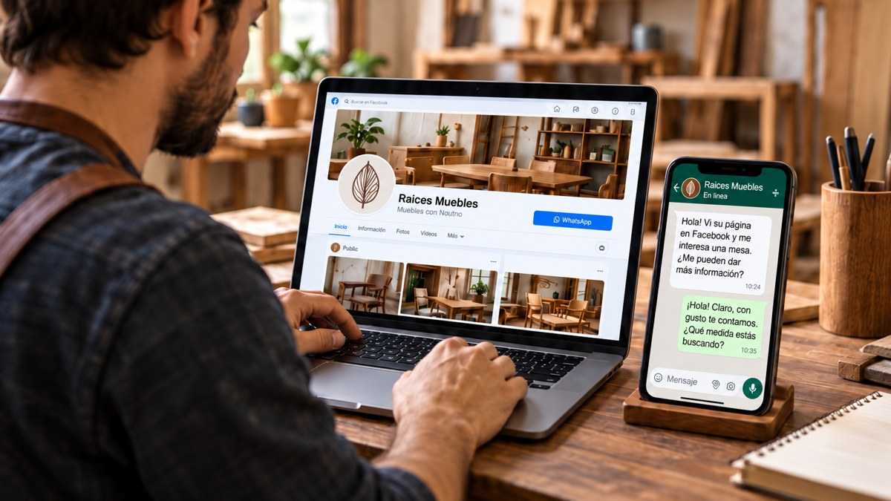
Aplicación ilustrativa
¿Tu página no refleja la calidad de lo que ofrecés? Le damos una presentación coherente y contenido que explique tu propuesta e invite a consultar por WhatsApp.
Qué incluye este pack
- ✓ Asesoramiento personalizado según las necesidades del negocio.
- ✓ Portada profesional y foto de perfil adaptada a tu marca.
- ✓ 5 imágenes iniciales con sus 5 redacciones y llamados a la acción.
- ✓ Contenido para presentar, explicar un servicio, responder dudas, mostrar tu trabajo e invitar a consultar.
- ✓ Información, categoría, horarios y ajustes de la página según corresponda.
- ✓ Botón vinculado a WhatsApp Business para continuar las consultas.
- ✓ Publicación fijada de presentación.
- ✓ Guía para continuar publicando.
Incluye diseño y puesta a punto inicial. Publicidad paga y gestión mensual se cotizan aparte.
Precio anticipado
$160.000 ARS
Contratando hasta el 29 de octubre de 2026.
Precio promocional: $175.000 ARS, del 30 de octubre al 15 de noviembre de 2026.
PACK 03 · Cerca de tus clientes
Google Maps
Estás cerca. Que puedan encontrarte.
Aplicación ilustrativa
¿Cuesta encontrar tu negocio o saber cuándo atendés? Preparamos un perfil con información clara para facilitar que te ubiquen, conozcan tu actividad y se contacten.
Qué incluye este pack
- ✓ Asesoramiento personalizado y asistido.
- ✓ Alta o revisión de tu Perfil de Empresa, según elegibilidad.
- ✓ Acompañamiento en el proceso de verificación.
- ✓ Categoría y descripción acordes a la actividad.
- ✓ Ubicación o zona de servicio, según el tipo de negocio.
- ✓ Horarios habituales y datos de contacto.
- ✓ Preparación y carga de logo, portada y fotos aportadas del negocio.
- ✓ Guía para actualizar información y responder reseñas reales.
El perfil de Google es gratuito: el pack cubre el trabajo de ARPERTING. La verificación depende de Google. No incluye anuncios ni garantiza posiciones.
Precio anticipado
$180.000 ARS
Contratando hasta el 29 de octubre de 2026.
Precio sugerido promocional: $220.000 ARS, del 30 de octubre al 15 de noviembre de 2026.
PACK 04 · Marca que se nota
Instagram
Tu trabajo merece un perfil que lo demuestre.
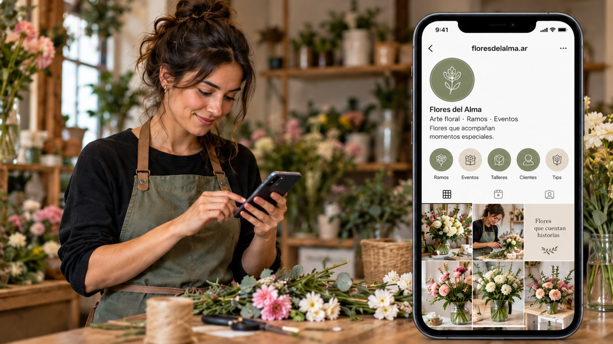
Aplicación ilustrativa
¿Tu perfil mezcla estilos o te cuesta explicar qué ofrecés? Unimos identidad, contenido y mensajes para mostrar tu trabajo con coherencia y facilitar el paso a WhatsApp.
Qué incluye este pack
- ✓ Asesoramiento personalizado y asistido.
- ✓ Foto de perfil adaptada a tu marca.
- ✓ Historias destacadas con iconos personalizados.
- ✓ Colores y estilo visual acordes a tu identidad.
- ✓ 5 imágenes iniciales con sus redacciones.
- ✓ 5 carruseles con redacción y llamados a la acción.
- ✓ Biografía y ajustes del perfil según tu negocio.
- ✓ Enlace a WhatsApp Business para continuar las consultas.
La cantidad de iconos y de láminas por carrusel se define en la propuesta. Publicidad paga y gestión mensual se cotizan aparte.
Precio anticipado
$160.000 ARS
Contratando hasta el 29 de octubre de 2026.
Precio sugerido promocional: $175.000 ARS, del 30 de octubre al 15 de noviembre de 2026.
¿No sabés cuál elegir? Contanos qué te está costando y te ayudamos a priorizar.
Antes de contratar, acordamos tiempos, revisiones, materiales y forma de pago. Los packs trabajan sobre tu identidad actual; un logo nuevo se cotiza por separado.
↑ Volver al inicio
Que tu
comunicación esté a la altura de tu trabajo
Tu negocio ya tiene valor. Trabajemos en cómo lo mostrás.
Que tu marca refleje lo que valés
¿Tu negocio se ve menos profesional de lo que es?
Una identidad que te represente.
Diseño y presentaciones que comuniquen el valor de tu trabajo.
Que cada publicación se sienta tuya
¿Cada pieza parece de una marca diferente?
Un estilo reconocible.
Colores, tipografías y recursos que den coherencia a tu comunicación.
Que se entienda por qué elegirte
¿Te cuesta explicar qué hace diferente a tu negocio?
Un mensaje claro.
Ordenamos qué ofrecés, para quién y cómo dar el próximo paso.
Que publicar deje de ser un pendiente
¿No tenés tiempo para pensar qué publicar?
Contenido con una dirección.
Definimos temas y creamos las piezas acordadas para tus canales.
Vos conocés tu negocio. Nosotros aportamos estrategia, diseño
y contenido para comunicarlo.
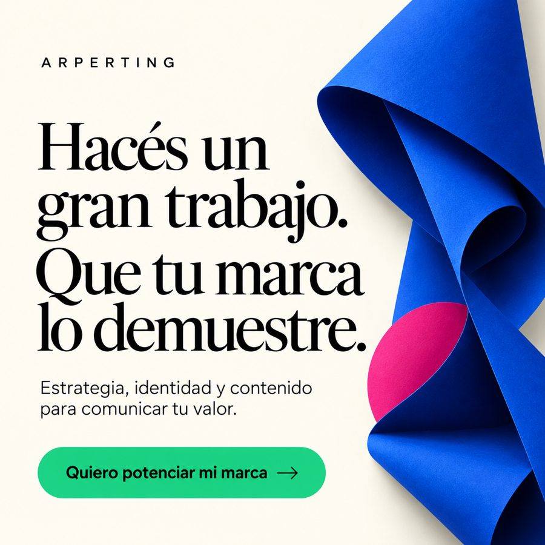 Mostrá el valor que ya tiene tu negocio.
Démosle una expresión clara, coherente y propia. |
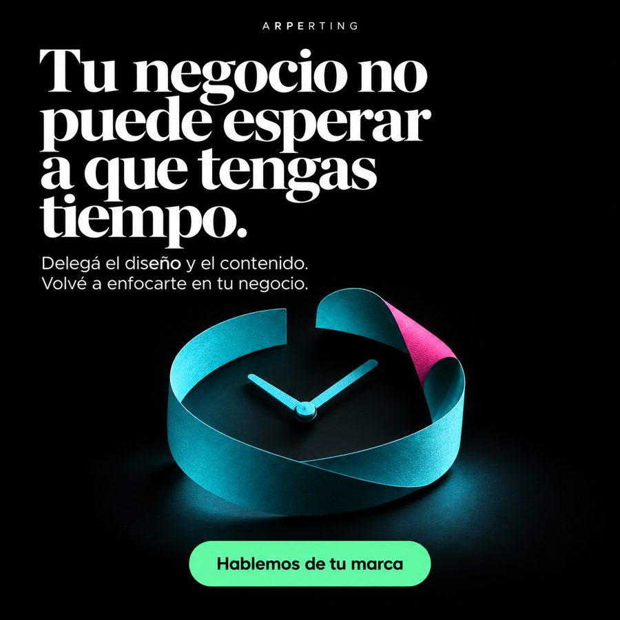 Recuperá espacio para lo que necesita de vos.
Definamos qué tareas de comunicación podés delegar. |
Una
imagen abre la conversación. El mensaje le da una razón para
continuar.
Explorá nuestras decisiones de diseño. Estas muestras son
proyectos propios y exploraciones conceptuales de
ARPERTING.
Identidad con carácter editorial
Exploración conceptual · ARPERTING
Jerarquía, textura y personalidad para una presentación visual propia.
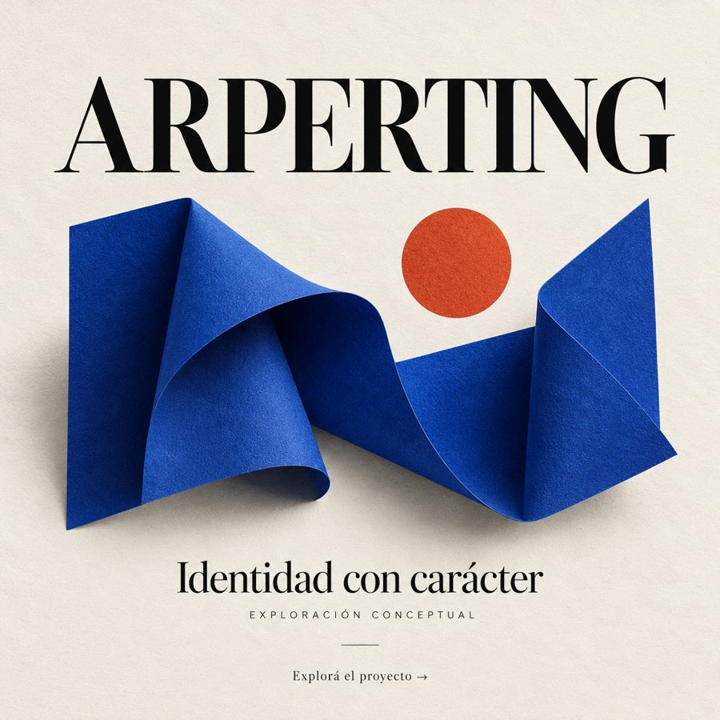
Explorar el proyecto →
Así construimos nuestra propia presencia digital
Proyecto propio · ARPERTING
Unimos identidad visual, mensajes y contenido para explicar nuestros servicios y facilitar el contacto.
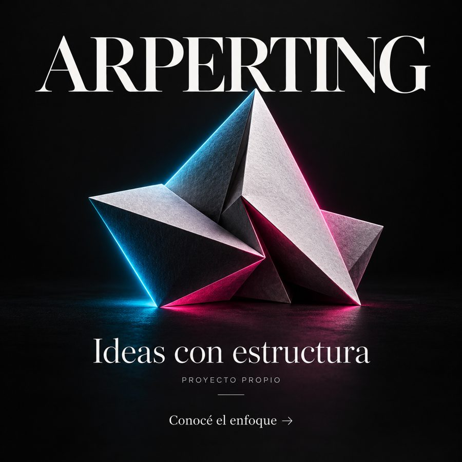
Explorar el diseño →
↑ Volver al inicio
Elegí por dónde empezar
Una necesidad concreta, un alcance claro y entregables que puedas
usar.
Ordenar mi marca
Revisamos lo que ya tenés y definimos un mensaje y una dirección
visual. Podés recibir paleta, tipografías, aplicaciones prioritarias y
pautas de uso.
Ordenar mi contenido
Definimos temas, mensajes y formatos. Podés recibir textos y piezas
para los canales acordados, con recursos organizados para dar
continuidad.
Presentar mejor mi servicio
Damos forma a tu propuesta para que se entienda qué ofrecés. Podés
recibir una presentación comercial o piezas digitales con mensajes y
jerarquía claros.
Ver la propuesta visual de servicios
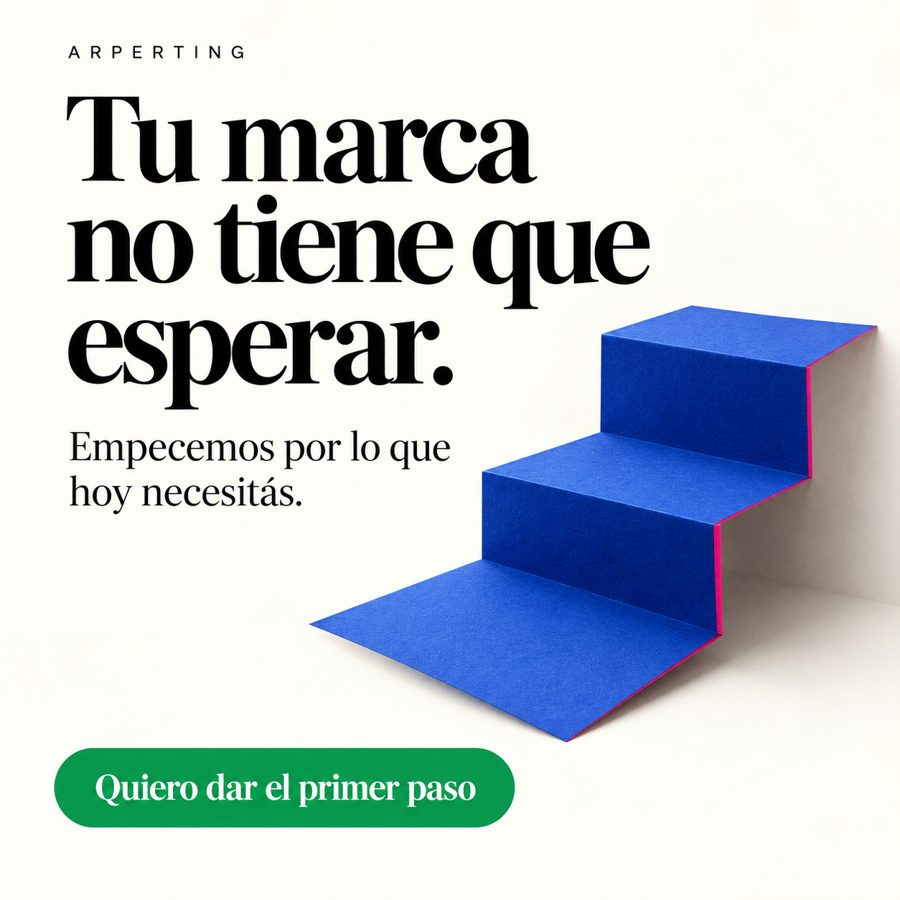
Antes de empezar, acordamos alcance, formatos, tiempos y
revisiones. Los archivos editables y los servicios de
publicación o gestión se especifican en cada propuesta.
↑ Volver al inicio
Un proceso claro
para que sepas qué esperar
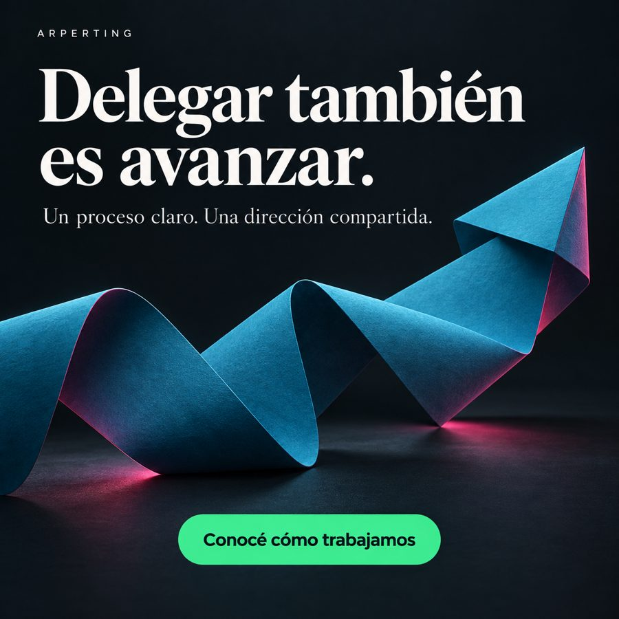
Sabé qué vamos a hacer, qué necesitamos de vos y
cómo revisaremos cada entrega.
- Te escuchamos. Conocemos tu negocio, público y
necesidad.
- Definimos el alcance. Acordamos objetivos, piezas,
tiempos y revisiones.
- Creamos con intención. Desarrollamos propuestas y
explicamos las decisiones.
- Revisamos y entregamos. Ajustamos y preparamos los
formatos acordados.
La creatividad tiene más fuerza cuando sabemos qué queremos
comunicar.
↑ Volver al inicio
Detrás de
ARPERTING hay una mirada y una conversación
Soy Dave Vergara. Trabajo en creatividad, diseño y
comunicación digital.
Con ARPERTING busco ayudarte a mostrar el valor de tu negocio con una
dirección clara. El punto de partida es entender qué hacés, a quién
querés llegar y qué necesitás comunicar.
Me interesa que puedas entender las decisiones del proyecto: qué
queremos decir, por qué elegimos una imagen y qué acción esperamos
facilitar.
Tu conocimiento del negocio es parte del trabajo. La
estrategia y el diseño le dan forma para compartirlo.
↑ Volver al inicio
Ideas para mirar tu
marca con otros ojos
↑ Volver al inicio
Antes de escribirnos
¿Puedo empezar por una sola pieza?
Sí. Conversamos sobre una necesidad puntual y definimos el
alcance.
¿Pueden trabajar con mi identidad actual?
Sí. Revisamos sus elementos y evaluamos cómo aplicarlos al
proyecto.
¿Cómo se define el presupuesto?
Podés consultar nuestros packs y
precios como punto de partida. Si necesitás otro alcance, armamos
una propuesta según las piezas, formatos, tiempos y revisiones.
↑ Volver al inicio
Hagamos visible lo que
tu negocio vale
No necesitás llegar con todo resuelto. Empecemos por entender
tu negocio.
Para orientar la conversación, contanos:
- Qué ofrecés y a quién querés llegar.
- Dónde mostrás hoy tu trabajo; podés compartir tu perfil.
- Qué te gustaría comunicar mejor o delegar.
Con esa información podemos conversar sobre prioridades y definir una
propuesta con alcance concreto.
Escribinos
por WhatsApp. Contanos qué necesitás y conversemos sobre el
alcance.
Canales en preparación. Pronto podrás conocer
nuestras novedades en instagram, facebook, tiktok. Mientras tanto,
conversemos por WhatsApp.
Mensaje para iniciar la conversación:
Hola, ARPERTING. Mi negocio es ___. Ofrezco ___. Me gustaría mostrar
mejor ___ y conocer cómo podemos trabajarlo.
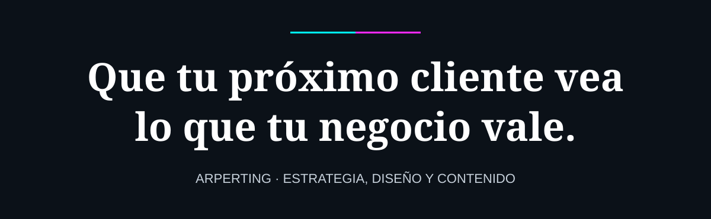
Vos hacés que tu negocio avance. Nosotros te ayudamos a mostrar por qué elegirlo.
ARPERTING · Ideas que se ven. Marcas que se recuerdan.
↑ Volver al inicio
← Volver a ARPERTINGARPERTING · Dirección
editorial
Tipo: exploración propia. No es un trabajo de un
cliente externo.
Necesidad
Presentar creatividad con una expresión sobria y reconocible.
Decisiones
Fondo marfil, tipografía protagonista y un elemento escultórico azul.
La composición deja espacio para que el nombre sea el primer punto de
lectura.
Aplicación posible
Cabecera, presentación comercial y piezas de identidad. Cada
adaptación requiere revisar proporción y legibilidad.
Lo que demuestra
Criterio de composición y dirección visual. No se atribuyen
resultados comerciales a esta exploración.
Volver al perfil · Conversar sobre un proyecto
← Volver a ARPERTINGAsí
construimos nuestra propia presencia digital
Proyecto propio · ARPERTING
Unimos identidad visual, mensajes y contenido para explicar nuestros
servicios y facilitar el contacto.
Una identidad, distintas
aplicaciones
Cabecera de marca
Nombre protagonista, mensaje de marca y una composición que reúne
estrategia, diseño y contenido.
Pieza de identidad
Pliegues, textura y acentos cian y magenta para dar continuidad a la
dirección visual.
Mensaje de servicio
Una aplicación que conecta el valor del trabajo con una invitación a
conversar.
Estas piezas pertenecen al desarrollo de nuestra marca. Se presentan
como evidencia de diseño, sin atribuirles resultados comerciales.
Hablemos de la presencia de tu
negocio →
← Volver al portfolio
← Volver a ARPERTINGQué
debería entender una persona al entrar a tu perfil
Un visitante necesita ubicar qué ofrecés, para quién trabajás y cómo
contactarte. Las imágenes atraen la mirada, pero el mensaje tiene que
ayudar a comprender tu propuesta.
Revisá si el encabezado explica algo más que tu nombre. Mostrá
trabajos acompañados de contexto: qué necesidad había y qué hiciste. Una
imagen sin explicación puede verse bien y aun así dejar dudas.
Terminá cada recorrido con un paso claro. «Escribinos y contanos qué
necesitás» suele ser más concreto que pedir varias acciones a la
vez.
No hace falta llenar cada espacio. La coherencia y la claridad ayudan
a que el visitante encuentre lo importante.
Tu negocio ya tiene una historia. Trabajemos en cómo
mostrarla.
Hablemos de tu marca · Volver
← Volver a ARPERTINGNo
te falta compromiso: quizás te falta un sistema de contenido
Cuando cada publicación empieza desde cero, hay que decidir tema,
mensaje, imagen y formato a la vez. Esa acumulación de decisiones hace
que publicar se postergue.
Podés empezar por tres preguntas: ¿qué necesita entender tu cliente?,
¿qué duda aparece antes de comprar?, ¿qué muestra concreta puede
ayudarlo a decidir?
Agrupar esas respuestas permite definir temas y preparar piezas con
anticipación. No elimina la necesidad de revisar y actualizar; ordena el
trabajo.
Delegar funciona mejor cuando acordamos qué se produce, quién aporta
la información y quién aprueba. Así, la comunicación deja de depender de
resolver todo a último momento.
En ARPERTING podemos ayudarte a convertir esas respuestas en
una dirección de contenido y piezas concretas.
Conversemos sobre tu necesidad
· Volver
← Volver a ARPERTINGFacebook: empecemos por
lo que necesitás
¿Te pasa alguna de estas cosas?
❌ La foto y la portada no representan tu negocio.
✅ Diseñamos una presentación visual coherente para que identifiquen tu marca.
❌ No se entiende qué servicios ofrecés.
✅ Ordenamos la información y creamos piezas que expliquen tu propuesta.
❌ Publicás a las apuradas, cuando te queda tiempo.
✅ Preparamos temas, textos y diseños para un calendario acordado.
Ver todo lo que podemos preparar
❌ Las publicaciones no indican cómo consultar.
✅ Redactamos llamados a la acción claros y revisamos el recorrido hasta el contacto.
❌ Cada publicación tiene un estilo diferente.
✅ Definimos colores, tipografías y plantillas para dar continuidad a tu comunicación.
❌ Te cuesta organizar la publicación del contenido.
✅ Te guiamos con las herramientas disponibles; la programación y gestión se acuerdan por separado.
Diseño y contenido: Foto, portada, publicaciones y mensajes comerciales.
Configuración: Información de la página y recorrido hacia el contacto.
Guía de uso: Planificación y uso de herramientas de publicación.
Elegimos juntos lo que necesitás. El diseño, la configuración y el acompañamiento incluidos se detallan en tu propuesta.
No necesitás resolverlo todo de golpe. Empecemos por lo que hoy te quita tiempo.
← Volver a las muestras
← Volver a ARPERTINGInstagram: empecemos
por lo que necesitás
¿Te pasa alguna de estas cosas?
❌ Tu biografía no explica qué hacés ni para quién.
✅ Redactamos una presentación breve y clara con un próximo paso para consultar.
❌ Tu perfil mezcla estilos y no se reconoce tu marca.
✅ Definimos una dirección visual para fotos, diseños y portadas.
❌ No sabés qué publicar.
✅ Proponemos temas y formatos vinculados con tu servicio y las preguntas de tus clientes.
Ver todo lo que podemos preparar
❌ La información importante se pierde entre publicaciones.
✅ Organizamos historias destacadas y diseñamos portadas fáciles de reconocer.
❌ Tenés material, pero no sabés cómo convertirlo en contenido.
✅ Creamos carruseles y guiones para reels a partir del material y alcance acordados.
❌ Tus publicaciones no invitan a dar el siguiente paso.
✅ Sumamos llamados a la acción y revisamos que el contacto sea claro y accesible.
Diseño y contenido: Biografía, portadas, carruseles y guiones para reels.
Configuración: Organización de la presentación del perfil y sus accesos.
Guía de uso: Continuidad visual y planificación del contenido.
Elegimos juntos lo que necesitás. El diseño, la configuración y el acompañamiento incluidos se detallan en tu propuesta.
No necesitás resolverlo todo de golpe. Empecemos por lo que hoy te quita tiempo.
← Volver a las muestras
← Volver a ARPERTINGGoogle Maps:
empecemos por lo que necesitás
¿Te pasa alguna de estas cosas?
❌ Tus clientes no encuentran bien tu local.
✅ Revisamos dirección y ubicación para facilitar que sepan cómo llegar.
❌ Los horarios están incompletos o desactualizados.
✅ Ordenamos los horarios habituales y especiales para evitar confusiones.
❌ Las fotos no muestran lo que van a encontrar.
✅ Seleccionamos y preparamos fotos claras del frente, el espacio y lo que ofrecés.
Ver todo lo que podemos preparar
❌ La información no explica bien tu actividad.
✅ Revisamos categoría, descripción y datos de contacto del negocio.
❌ No sabés cómo responder las reseñas.
✅ Preparamos criterios y ejemplos de respuesta cercanos y profesionales, sin inventar opiniones.
❌ No sabés cómo gestionar tu perfil.
✅ Te orientamos sobre acceso, verificación y actualización. La aprobación depende de Google.
Diseño y contenido: Selección de fotos, descripción y textos de respuesta.
Configuración: Revisión de datos y horarios; acompañamiento en el proceso de verificación.
Guía de uso: Actualizaciones y atención de reseñas reales.
Elegimos juntos lo que necesitás. El diseño, la configuración y el acompañamiento incluidos se detallan en tu propuesta.
No necesitás resolverlo todo de golpe. Empecemos por lo que hoy te quita tiempo.
← Volver a las muestras
← Volver a ARPERTINGTikTok: empecemos por lo
que necesitás
¿Te pasa alguna de estas cosas?
❌ Querés mostrar tu trabajo, pero no sabés cómo empezar.
✅ Transformamos tus ideas en guiones breves con un gancho inicial claro.
❌ No tenés tiempo para editar cada video.
✅ Editamos el material acordado con cortes, subtítulos y un cierre que invite a consultar.
❌ Grabás sin saber qué tomas necesitás.
✅ Te damos una guía sencilla de planos, luz y encuadre para mostrar tu trabajo.
Ver todo lo que podemos preparar
❌ Cada video se siente desconectado del anterior.
✅ Definimos temas y una línea de contenido para darle continuidad a tu presencia.
❌ Se ve lo que hacés, pero no queda claro qué ofrecés.
✅ Conectamos la demostración con un mensaje que explique tu servicio.
❌ No sabés qué ajustar en los siguientes videos.
✅ Te orientamos para revisar las métricas disponibles y probar mejoras sin prometer viralidad.
Diseño y contenido: Ideas, guiones, edición y subtítulos.
Configuración: Presentación del perfil y organización del material acordado.
Guía de uso: Grabación y lectura básica del rendimiento del contenido.
Elegimos juntos lo que necesitás. El diseño, la configuración y el acompañamiento incluidos se detallan en tu propuesta.
No necesitás resolverlo todo de golpe. Empecemos por lo que hoy te quita tiempo.
← Volver a las muestras
← Volver a ARPERTINGWhatsApp
Business: empecemos por lo que necesitás
¿Te pasa alguna de estas cosas?
❌ Tu foto de perfil no representa tu negocio.
✅ Diseñamos o adaptamos una imagen reconocible, incluso en tamaño pequeño.
❌ Mandás fotos sueltas cada vez que te preguntan qué vendés.
✅ Creamos imágenes y descripciones para un catálogo organizado que facilite elegir.
❌ Escribís las mismas respuestas una y otra vez.
✅ Preparamos respuestas rápidas para tus preguntas frecuentes, listas para enviar mediante atajos.
Ver todo lo que podemos preparar
❌ No se entiende qué ofrecés al entrar a tu perfil.
✅ Redactamos una descripción clara y completamos la información del negocio.
❌ Tu presentación visual está incompleta.
✅ Diseñamos una portada coherente con tu marca, cuando la función esté disponible en tu cuenta.
❌ Te escriben sin saber cuándo atendés.
✅ Configuramos horarios y un mensaje de ausencia que indique cuándo podrán recibir respuesta.
❌ No tenés un saludo preparado para nuevas consultas.
✅ Configuramos un mensaje automático de bienvenida con información útil y un próximo paso.
❌ Se mezclan consultas, pedidos y seguimientos.
✅ Te ayudamos a organizar conversaciones con etiquetas según tu forma de trabajar.
❌ No sabés cómo mantenerlo actualizado.
✅ Te guiamos para actualizar el catálogo, los datos y las respuestas de tu negocio.
Diseño y contenido: Foto, portada disponible, imágenes de catálogo y textos.
Configuración: Perfil, catálogo, horarios, bienvenida, ausencia y etiquetas.
Guía de uso: Uso de respuestas rápidas y actualización del negocio.
Las respuestas rápidas se envían mediante atajos. La bienvenida y la ausencia pueden ser automáticas; no sustituyen un asistente que responda todas las consultas.
Elegimos juntos lo que necesitás. El diseño, la configuración y el acompañamiento incluidos se detallan en tu propuesta.
No necesitás resolverlo todo de golpe. Empecemos por lo que hoy te quita tiempo.
← Volver a las muestras